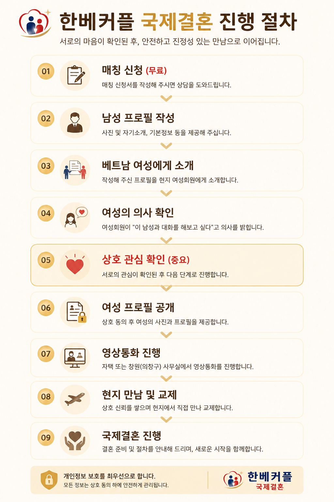

매칭 신청
네이버 폼을 통해 기본 정보를 작성합니다. 이 단계는 상담을 위한 무료 신청 단계입니다.
HAN-VIET COUPLE PROCESS
상호 동의와 신뢰를 바탕으로, 상담부터 현지 만남과 결혼 진행까지 단계별로 안내합니다.

네이버 폼을 통해 기본 정보를 작성합니다. 이 단계는 상담을 위한 무료 신청 단계입니다.
상담을 통해 희망 조건을 확인하고, 사진·자기소개·기본정보 등을 포함한 남성 프로필을 작성합니다. 작성된 프로필은 동의 후 베트남 현지 파트너를 통해 여성회원에게 소개될 수 있습니다.
남성과 여성이 사전에 제공된 서로의 프로필을 확인한 뒤, 대화를 해보고 싶은 의사가 있는지 확인합니다.
상호 관심이 확인된 경우, 여성의 동의를 받은 사진과 프로필을 제공합니다. 이후 구체적인 상담을 진행합니다.
여성회원과 다자간 영상통화를 진행합니다. 원활한 의사소통을 위해 한베커플 또는 현지 통역사가 함께 참여할 수 있으며, 자택 또는 한베커플 사무실에서 진행할 수 있습니다.
베트남 현지에서 직접 만나 서로를 이해하는 시간을 갖습니다. 일정과 절차에 따라 안전하게 진행합니다.
상호 결혼 의사가 확인되면 혼인, 비자, 입국 등 필요한 절차를 안내하고 진행을 돕습니다.